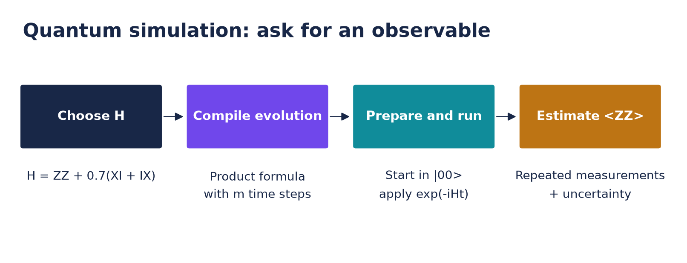
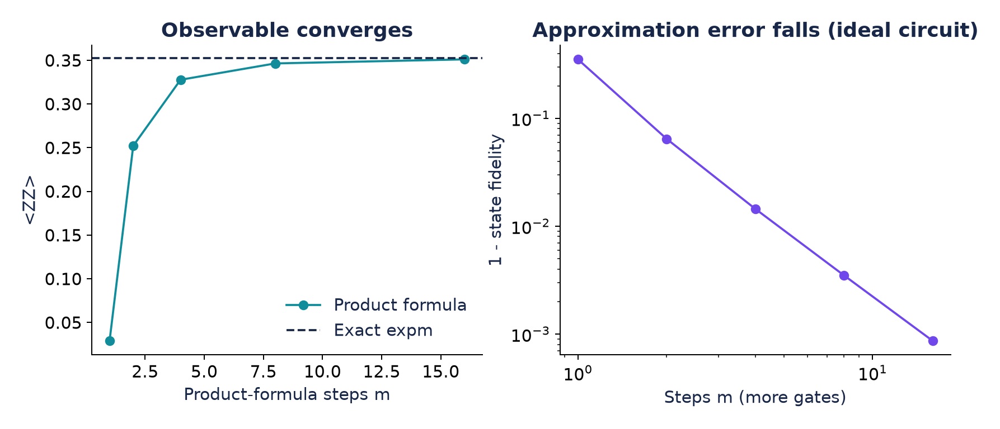

ในบทความนี้
In this post
Native problem — เลือกคำถามที่ output ไม่ใหญ่
ดาวน์โหลดประกอบซีรีส์
คู่มือฉบับเต็ม (PDF ภาษาอังกฤษ · 43 หน้า · 4.1 MB)
โค้ด ตัวอย่าง และแบบฝึก (ZIP)
บทที่ 6/7 · ดัดแปลงจากเอกสาร Quantum Algorithms for Programmers, Edition 1.0 หน้า 35 พร้อมโค้ดและคำอธิบายที่ตรวจซ้ำสำหรับเว็บ
Quantum simulation ใช้ระบบ quantum จำลอง dynamics หรือคุณสมบัติของอีกระบบ quantum จุดเริ่มที่ Feynman เสนอคือ classical representation ของ many-body state อาจโตแบบ exponential ขณะที่ quantum processor ใช้ qubits เพื่อแทนระบบโดยตรง งานนี้จึงมีโครงสร้างที่สอดคล้องกับเครื่องมากกว่าการนำฐานข้อมูล classical ขนาดใหญ่มาโหลดทั้งหมด
โจทย์สำคัญใน chemistry และ materials เกี่ยวกับ Hamiltonian ซึ่งเป็น operator ที่บอก energy และ evolution แต่ไม่ได้แปลว่าทุก molecule ต้องใช้ quantum computer classical approximations และ tensor-network methods ทำงานได้ดีในหลาย regime การอ้าง advantage ต้องระบุว่า classical method ติดขัดตรงไหน
ในเอกสารต้นทางบทนี้เป็นภาพรวม เราเพิ่ม runnable experiment ใหม่: สอง qubits เริ่มที่ |00⟩ วิวัฒน์เวลา t=1 แล้วถามค่า ⟨Z₀Z₁⟩ ซึ่งเป็นตัวเลขเดียว ตัวอย่างเล็กนี้ไม่มี speedup แต่เปิดให้ตรวจทั้ง approximation และ output contract อย่างครบถ้วน
Model — Hamiltonian และ observable คนละหน้าที่
ใช้ H = Z₀Z₁ + 0.7(X₀ + X₁) โดย X คือ bit-flip Pauli operator ส่วน Z ใส่เครื่องหมาย +1 บน |0⟩ และ −1 บน |1⟩ evolution ที่ต้องการคือ U(t)=exp(−iHt) เมื่อใช้หน่วยที่ ℏ=1 Hamiltonian บอกว่าจะ evolve อย่างไร ส่วน observable Z₀Z₁ บอกว่าจะวัดอะไร


สำหรับสอง qubits เราสร้าง matrix 4×4 แล้วใช้ scipy.linalg.expm หาค่า exact เพื่อเป็น reference ได้ คำว่า exact ในที่นี้หมายถึงการ exponentiate matrix โดยตรงภายใน floating-point accuracy ไม่ได้หมายถึงผล hardware ไร้ error
เมื่อวัด qubits ทั้งสองใน Z basis outcome ที่ bits เหมือนกันให้ค่า ZZ=+1 และต่างกันให้ −1 ค่าเฉลี่ยของ shots จึงประมาณ ⟨ZZ⟩ ได้โดยไม่ต้อง reconstruct amplitudes ทั้งหมด หากใช้ S shots standard error ของ sample mean จะไม่เกิน 1/√S ในการสุ่มอิสระของ observable ±1 นี้
Product formula — noncommuting terms ต้องแบ่งเวลา
terms ZZ และ X₀+X₁ ไม่ commute กัน จึงไม่สามารถแทน exp(−i(A+B)t) ด้วย exp(−iAt)exp(−iBt) เพียงครั้งเดียวแล้วอ้างว่าตรงได้ เราแบ่งเวลาเป็น m steps และทำ product formula ซ้ำ โดย dt=t/m แต่ละ step ใช้ RZZ(2dt) แล้ว RX(1.4dt) บนสอง qubits
ส่วนโค้ดสำหรับอ่านแนวคิด ใช้ไฟล์เต็มพร้อม imports จาก companion และคำสั่งใน Run & explore ด้านล่าง
def trotter(steps, t=1.0):
if not isinstance(steps, int) or steps < 1:
raise ValueError("steps must be a positive integer")
dt = t / steps
qc = QuantumCircuit(2)
for _ in range(steps):
qc.rzz(2 * dt, 0, 1)
qc.rx(1.4 * dt, [0, 1])
return qcลำดับ gate ใน code ต้องอ่านให้ตรงกับ matrix multiplication: gate ที่ apply ก่อนอยู่ด้านขวาของ product เมื่อคูณ statevector ตัวทดสอบจึงเทียบ full circuit unitary กับ exp(−iHt) โดยตรงด้วย ไม่ได้เทียบแค่ observable ที่อาจบังข้อผิดพลาดบางอย่าง
first-order product formula มี error ที่ลดลงเมื่อเพิ่ม m สำหรับ fixed time และ Hamiltonian ที่เหมาะสม ในตัวอย่างนี้ state infidelity ลดใกล้ O(1/m²) แต่ scaling นี้เป็นผลของ metric และกรณีที่กำลังดู ไม่ควรใช้ตัวเลขเดียวนี้แทน complexity bound ของทุก quantum simulation
Convergence — ชัดเจนว่า approximation ดีขึ้น
ผลรันที่บันทึก 24 November 2026
Exact <ZZ> at t=1: 0.352560
steps= 1; <ZZ>=0.028889; infidelity=0.351853
steps= 2; <ZZ>=0.252098; infidelity=0.064421
steps= 4; <ZZ>=0.327666; infidelity=0.014434
steps= 8; <ZZ>=0.346365; infidelity=0.003487
steps=16; <ZZ>=0.351014; infidelity=0.000862

exact expectation เท่ากับ 0.352560 สำหรับ m=1 ได้ 0.028889 ซึ่งยังห่างมาก เมื่อเพิ่มเป็น 16 steps ได้ 0.351014 และ infidelity เหลือ 0.000862 ผลนี้คำนวณจาก ideal statevector ไม่ได้เก็บ shots จึงไม่มี sampling uncertainty ใน plot มีเฉพาะ approximation และ floating-point error
| Steps m | Two-qubit RZZ gates | State infidelity |
|---|---|---|
| 1 | 1 | 0.351853 |
| 4 | 4 | 0.014434 |
| 16 | 16 | 0.000862 |
ใน hardware การเพิ่ม steps เพิ่ม two-qubit gate count และอาจเพิ่ม routing gates ด้วย จึงมีจุดที่ approximation ดีขึ้นแต่ noise แย่ลง ต้องแยก error budget เป็น model error, product-formula error, gate/readout error และ sampling error ก่อนเลือก depth
Why it matters — simulation ไม่ใช่ HHL
HHL ใช้ Hamiltonian evolution เป็น subroutine เพื่อ invert matrix แต่ chemistry simulation ใช้ evolution, energy estimation หรือ correlation measurements เป็นงานหลัก เป้าหมายและ output จึงต่างกัน แม้ใช้ phase estimation หรือเทคนิควงจรร่วมกันได้
การหา ground-state energy ยังมีโจทย์ state preparation และ spectral overlap เพิ่ม ไม่ใช่แค่เรียก QPE แล้วได้ ground state ทันที งาน resource estimate สำหรับ FeMoco ของ Reiher และคณะแสดงตัวอย่างการผูก scientific target เข้ากับความต้องการของ fault-tolerant machine อย่างเป็นรูปธรรม แต่ไม่ได้เป็นผลจำลอง molecule นั้นบน hardware ที่ใช้ได้ทั่วไปแล้ว
เมื่ออ่านคำอ้างเรื่อง quantum advantage ให้ระบุ observable, precision, verification method และ classical competitor ทุกครั้ง การจำลองระบบ quantum มีเหตุผลเชิงโครงสร้างที่แข็งแรง ส่วนความคุ้มค่าของ workload เฉพาะยังเป็นคำถามที่ต้องพิสูจน์ด้วย evidence
Run & explore — ลงมือทดลอง
Complete code · SimulationTests · Exercise · Setup & troubleshooting
ใช้ Python 3.12–3.13 และ virtual environment ตาม README ไม่ต้องใช้ API key หรือ quantum hardware หากยังไม่ติดตั้งให้ทำตามตอน 1 หรือ README
# From the companion root, with the virtual environment active
python quantum_simulation.py
python -m unittest discover -s tests -p test_algorithms.py -k SimulationTests -vลองต่อด้วยตัวเอง
เปลี่ยน t เป็น 0 แล้วตรวจว่า unitary เป็น identity จากนั้นเพิ่มการสุ่มวัด ZZ และรายงาน confidence interval เปรียบเทียบ 100 กับ 10,000 shots แยก sampling error จาก product-formula error ให้ชัด
Sources & verification — แหล่งอ้างอิง
Primary sources และขอบเขตการตรวจ
เอกสารผู้เขียนเป็นต้นทางของคำอธิบายและภาพที่ระบุ ส่วนลิงก์ข้างล่างเป็นเอกสารวิจัยและมาตรฐานที่ใช้ตรวจข้ออ้าง โค้ดรันซ้ำบน Python 3.13, Qiskit 2.6.2, Aer 0.18.4, NumPy 2.5.5 และ SciPy 1.18.1 วันที่ 24 November 2026 ผลทั้งหมดเป็น local simulation หรือค่าตัวอย่างที่ระบุ ไม่มีการรัน hardware
Native problem: choose a compact output
Download the series resources
Complete guide (English PDF · 43 pages · 4.1 MB)
Code, examples and exercises (ZIP)
Part 6/7. Adapted from Quantum Algorithms for Programmers, Edition 1.0, pp. 35, with web explanations and rerun code.
Quantum simulation uses one quantum system to model the dynamics or properties of another. Feynman's motivating observation was that classical representations of many-body states can grow exponentially, whereas a quantum processor represents the system with qubits. This creates a natural structure without necessarily loading a large arbitrary classical dataset.
Chemistry and materials problems are expressed through Hamiltonians, operators describing energy and evolution. That does not make every molecule a quantum-computing target: classical approximations and tensor-network methods work well in many regimes. An advantage claim must identify where those methods fail.
The guide presents this topic as an overview. We add a new executable experiment: two qubits start in |00⟩, evolve to t=1, and return one number, ⟨Z₀Z₁⟩. This small system offers no speedup, but exposes both approximation error and the output contract.
Model: distinguish the Hamiltonian from the observable
Use H = Z₀Z₁ + 0.7(X₀ + X₁). X is the Pauli bit-flip operator; Z assigns +1 to |0⟩ and −1 to |1⟩. With ℏ=1, evolution is U(t)=exp(−iHt). The Hamiltonian specifies how the state evolves; the observable Z₀Z₁ specifies what we ask it to reveal.
At two qubits, a 4×4 matrix and scipy.linalg.expm provide a direct reference. Here “exact” means direct matrix exponentiation within floating-point accuracy, not an error-free hardware measurement.
Computational-basis outcomes with matching bits contribute ZZ=+1; differing bits contribute −1. Averaging shots estimates ⟨ZZ⟩ without reconstructing all amplitudes. For S independent ±1 measurements, the sample mean's standard error is at most 1/√S.
Product formula: split time for noncommuting terms
ZZ and X₀+X₁ do not commute. A single exp(−iAt)exp(−iBt) therefore cannot be substituted for exp(−i(A+B)t) as an exact identity. Divide time into m steps with dt=t/m. Each step applies RZZ(2dt), then RX(1.4dt) on both qubits.
Implementation excerpt. Use the complete companion file with its imports and the Run and explore commands below.
def trotter(steps, t=1.0):
if not isinstance(steps, int) or steps < 1:
raise ValueError("steps must be a positive integer")
dt = t / steps
qc = QuantumCircuit(2)
for _ in range(steps):
qc.rzz(2 * dt, 0, 1)
qc.rx(1.4 * dt, [0, 1])
return qcMatch circuit order to matrix multiplication: the first applied gate sits on the right of the matrix product acting on a statevector. Our test compares the full circuit unitary with exp(−iHt), as well as inspecting an observable that might hide some errors.
For fixed time and a suitable Hamiltonian, first-order product-formula error decreases as m increases. State infidelity in this example falls approximately as O(1/m²). That observed metric is not a universal complexity bound for quantum simulation.
Convergence: make the approximation error visible
Captured run, 24 November 2026
Exact <ZZ> at t=1: 0.352560
steps= 1; <ZZ>=0.028889; infidelity=0.351853
steps= 2; <ZZ>=0.252098; infidelity=0.064421
steps= 4; <ZZ>=0.327666; infidelity=0.014434
steps= 8; <ZZ>=0.346365; infidelity=0.003487
steps=16; <ZZ>=0.351014; infidelity=0.000862The direct reference is 0.352560. One step gives 0.028889, a large discrepancy. Sixteen steps give 0.351014 with state infidelity 0.000862. These are ideal statevector calculations, not shot samples; the chart contains approximation and floating-point error, without sampling uncertainty.
| Steps m | Two-qubit RZZ gates | State infidelity |
|---|---|---|
| 1 | 1 | 0.351853 |
| 4 | 4 | 0.014434 |
| 16 | 16 | 0.000862 |
On hardware, extra steps add two-qubit gates and may require routing gates. Approximation can improve while noise worsens. Separate model error, product-formula error, gate/readout error and sampling error before choosing depth.
Why it matters: simulation is distinct from HHL
HHL borrows Hamiltonian evolution to invert a matrix. Chemistry simulation uses evolution, energy estimation or correlation measurements as the task itself. The objectives and outputs differ even when they share phase-estimation machinery.
Ground-state energy estimation also needs suitable state preparation and spectral overlap. Calling QPE does not automatically prepare the ground state. Reiher and colleagues' FeMoco resource study illustrates how a scientific target can be translated into fault-tolerant resource requirements; it is not a completed general-purpose hardware simulation of that target.
For any advantage claim, specify the observable, precision, verification method and classical competitor. Quantum simulation has a strong structural motivation. Whether a particular workload is useful remains an evidence question.
Run and explore
Complete code · SimulationTests · Exercise · Setup & troubleshooting
Use Python 3.12–3.13 and the README virtual environment. No API key or quantum hardware is required. If setup is incomplete, follow part 1 or the README.
# From the companion root, with the virtual environment active
python quantum_simulation.py
python -m unittest discover -s tests -p test_algorithms.py -k SimulationTests -vYour experiment
Set t=0 and verify identity evolution. Then sample ZZ measurements, report an uncertainty interval for 100 versus 10,000 shots, and separate sampling error from product-formula error.
Sources and verification
Primary sources and verification scope
The author’s guide supplies the credited explanations and illustrations. Linked papers and standards support the claims. Code was rerun locally on 24 November 2026 with Python 3.13, Qiskit 2.6.2, Aer 0.18.4, NumPy 2.5.5 and SciPy 1.18.1. Results are local simulations or explicitly hypothetical inputs; no quantum hardware was used.